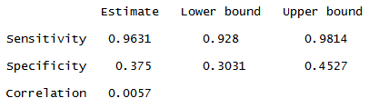
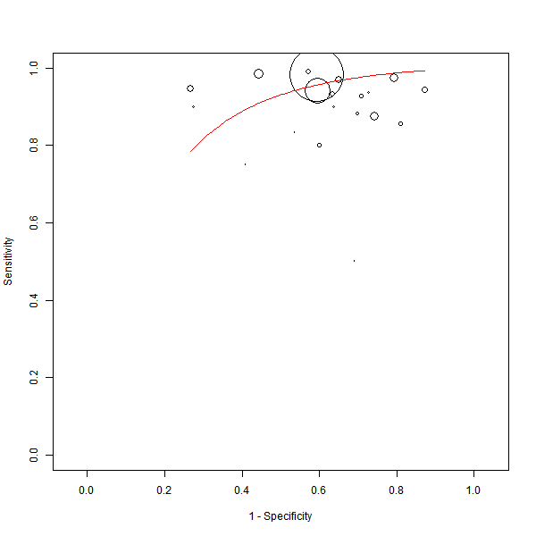
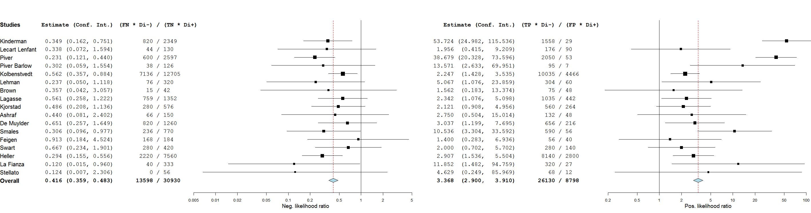

This section provides an example that illustrates how to perform a meta-analysis of diagnostic data.
To run the example, do the following steps:
- Select Open on the File menu.
- In the Open File dialog, double-click the sample_data directory and open the file lymph.oma.
- In the Analysis menu,
select meta-analysis. This opens the Diagnostic Metrics dialog, in which you can select the metrics for the analysis.

If you select likelihood ratio, both a positive likelihood ratio and a negative likelihood ratio analysis are performed.
- Click next. Depending on which metrics you select in the preveious step, one or both of the dialogs shown below are displayed.
- If you select either sensitivity or specificity, the Method & Parameters for Sens./Spec. dialog is displayed, in which you can choose a method and parameters for both the sensitivity and specificity analyses. In this example, the method is Bivariate (Maximum Likelihood), which uses a bivariate model for sensitivity and specificity.

Note: If you select either Diagnostic Fixed-Effect or Diagnostic Random-Effects as the method for sens/spec., Open Meta-Analyst does not use a bivariate model. Instead, it performs two separate meta-analyses for sensitivity and specificity, using a univariate model in each case.
- If you select either likelihood ratio or diagnostic odds ration, the Method & Parameters for DOR/LR dialog is displayed, in which you can choose a method and parameters for both the likelihood ratio and diagnostic odds ratio analyses.

- Click OK to run the analysis.
For each selected method, the results pane displays a summary of the results. Since, in this example, the selected method for sensitivity and specificity is Bivariate (Maxiumum Likelihood) the results pane displays a standard receiver operating curve (SROC) of sensitivity by 1 - specificity, as shown below.


Since the selected method for likelihood ratio is Diagnostic Random-Effects, Open Meta-Analysis performs separate meta-analyses for positive and negative likelihood ratios and diagnostic odds ratio, and displays forest plots of the results.
The negative likelihood ratio forest plost is shown below.

Back to top
 | Entering and Saving Data | | Fixed and Random Effects Models |  |